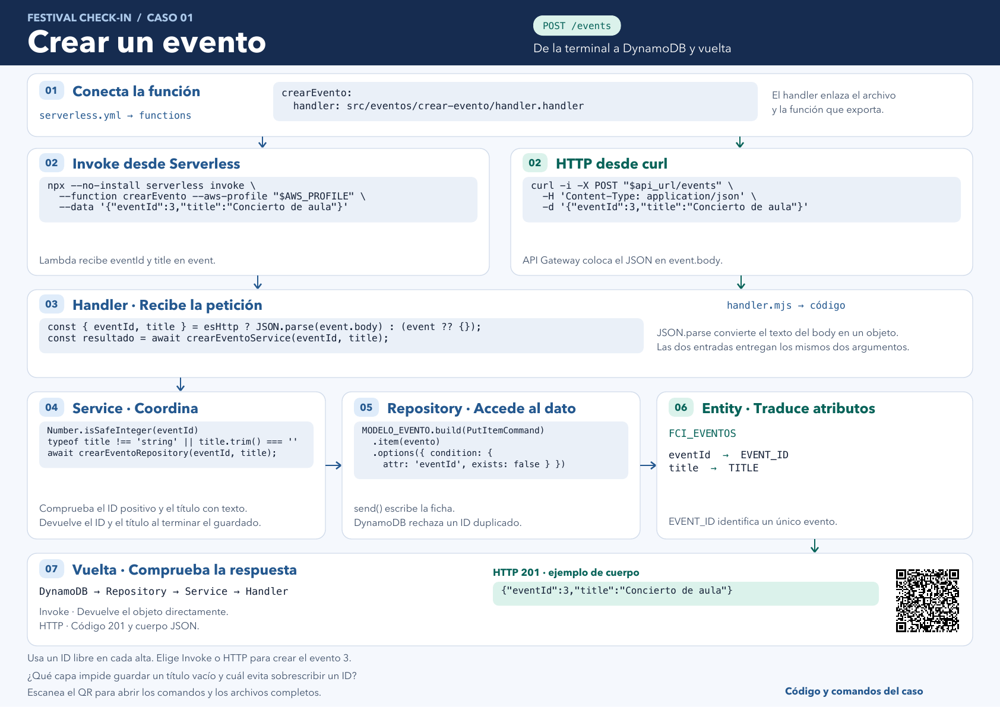

Usa un ID libre en cada alta. Elige Invoke o HTTP para crear el evento 3.
Invoke
npx --no-install serverless invoke \
--function crearEvento --aws-profile "$AWS_PROFILE" \
--data '{"eventId":3,"title":"Concierto de aula"}'HTTP con curl
curl -i -X POST "$api_url/events" \
-H 'Content-Type: application/json' \
-d '{"eventId":3,"title":"Concierto de aula"}'